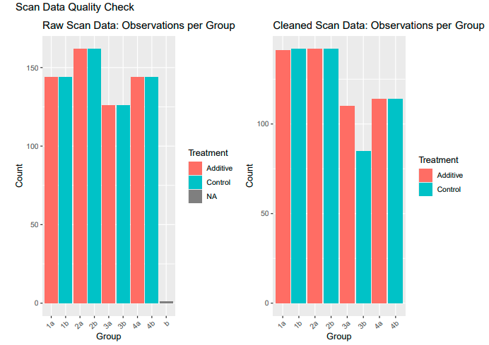
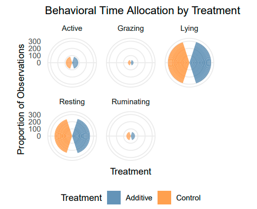

Research Project Analysis Service
Service Overview
I provide comprehensive statistical analysis services for academic research projects. My approach follows a rigorous, reproducible workflow from raw data to publication-ready results.
- Longitudinal data analysis
- Mixed-effects modeling
- Data visualization for scientific communication
Methodology
- Customized analysis plans aligned to the specific research questions
- Transparent documentation of all analytical steps
- Diagnostic checks and sensitivity analyses
- Contextual interpretation of the results
Deliverables
- Cleaned datasets
- Reproducible R scripts with detailed comments
- Statistical reports with tables/figures
- Support for manuscript methods/results sections
Step-by-Step
1. Data Cleaning & Quality Control

- Missing data diagnostics
- Outlier detection
- Distribution checks
- Visual verification (example shown)
2. Statistical Analysis
- Generalized Linear Mixed Models for repeated measures
- Time-series analysis
- Multivariate techniques
- Model selection, diagnostics and performance analysis
- Example table showing model results:
3. Data Visualization

- Time-series plots
- Treatment effect plots
- Multidimensional scaling
- Interactive exploratory visuals
4. Scientific Reporting
- Comprehensive documentation
- Statistical methods justification
- Results interpretation
- Manuscript-ready tables/figures